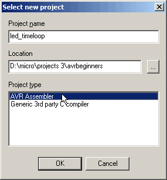
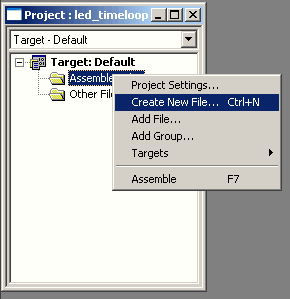
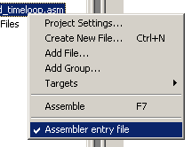
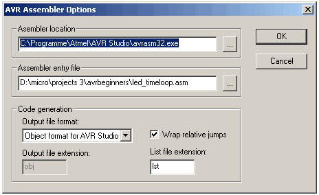

Here's how to create a new project in AVR Studio. It's fairly simple and straight forward, but I thought it might be worth explaining. In the menu, click on "Project -> New". Select a project name and directory (I suggest placing each project and its files into an own project directory). Also choose "AVR Assembler" as the Project Type; then hit OK.

You will see the "Project Manager" (right image). It is used to add files to the project, create new ones and keeping track of the files associated with the project. Add a file to the project byy clicking right on the "Assembler Files" folder and select "Create New File...". In the Dialog, check that the directory is correct, choose a file name and make sure you add a valid extension (.asm), otherwise it won't work. The new file will show up underneath the "Other Files" folder. Drag it into the "Assembler Files" folder.
You can include files in your assembler project using the .include directive. The definition files for the AVR types for example have to be included for names like "PortB" to work. The top file, from which all other files are included is the "Assembler Entry File" which the assember starts with when it try to translate your code. You can set the assembler entry file (if your project contains more than one file) by right clicking in it and checking the "Assembler Entry File" option in the drop-down menu. For the first file this will be checked by default (what else should the assembler start with?).

This is it. You can now open the new file and add code to it. You can also add an already existing file and choose that one to be the entry file of course.
The "Project Settings" box is quite important as well.

If you want to simulate your code in AVR Studio, choose "Object format for AVR Studio" in the "Output file format" box. The assember will the create files that can be simulated by AVR Studio. If you want to download your code to a target system such as the STK500 or some other board/projaect hardware, you'll have to choose "Intel Hex" as output format. The assembler will then generate a hex file you can download. Quite often I wonder why my code doesn't work because I already had an old hex file with the right file name, but simulated newer code. If I then didn't change the output file format, old code is stored in Flash. Of course there's more you can do with your projects in the menus, but this will be enough for the project to work.